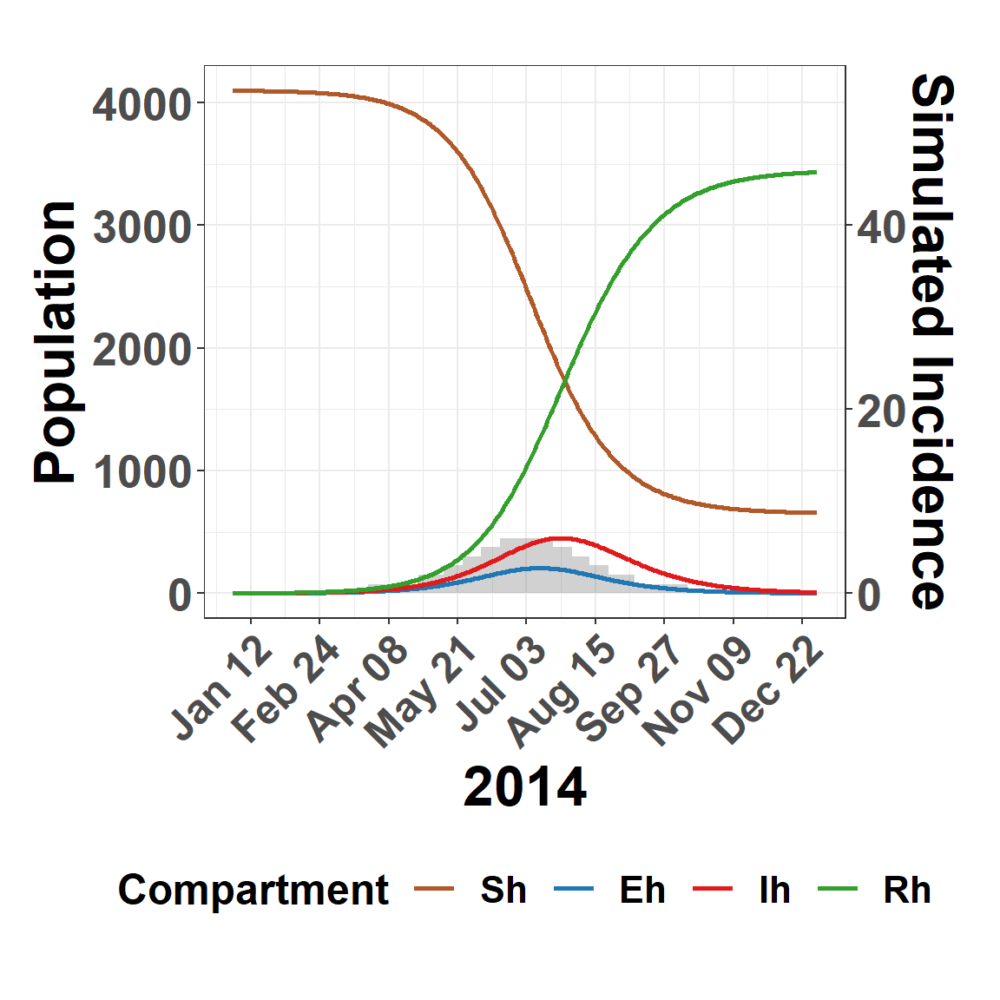
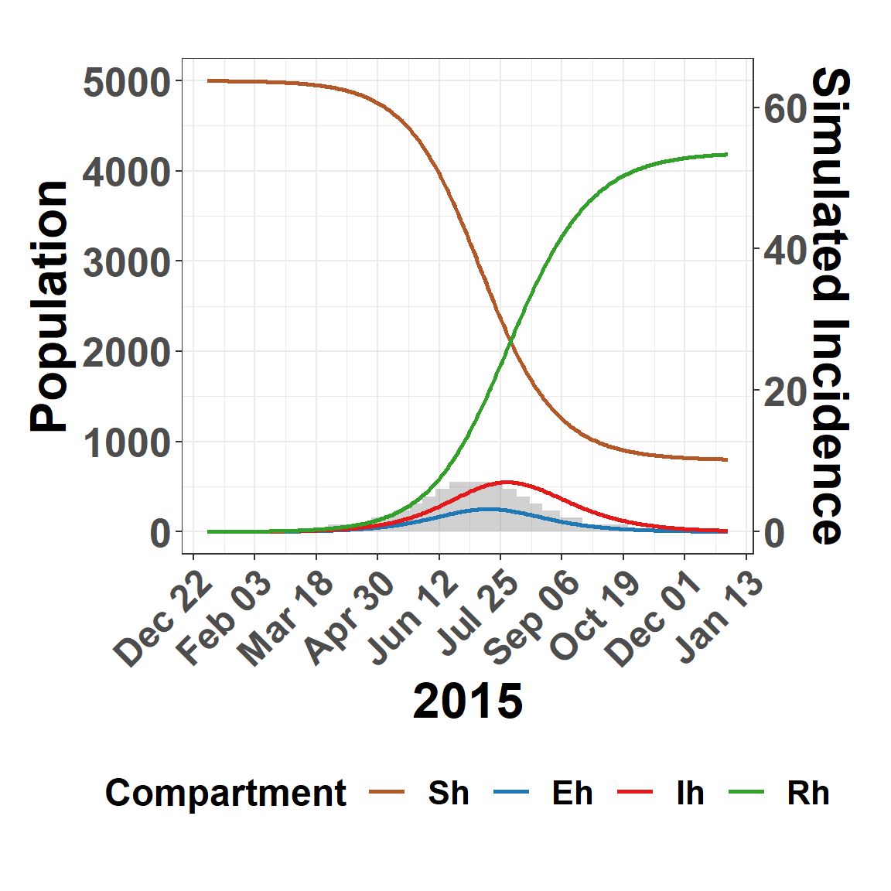

This site provides a demonstrative workflow and supporting information for the publication: Interrogating Genomes and Geography to Unravel Multiyear Vesicular Stomatitis Epizootics
Humphreys, Shults, Velazquez Salinas, Bertram, Pelzel-McCluskey, Peters, and Rodriguez
The menu at right can be used to navigate through the workflow.
Load Libraries
Load needed R-packages to execute code. Note that the r-INLA package (Rue, Martino, and Chopin (2009), Lindgren and Rue (2015)) is not available on CRAN and must be installed from the INLA team website.
The assets folder includes raster and other data files to perform the analysis
Hide code
domain <-vect(here("assets/domain")) # geographic boundary polygonsobs_stack.r <-rast( # Rasters depicting Spatial Random Fields estimated from true datalist(rast(here("assets/rf_2014.tif")),rast(here("assets/rf_2015.tif")) ))
Simulate Outbreak
Virus and disease detection data presented in the manuscript includes the geographic coordinates recording locations for private residences and businesses. This data is confidential and cannot be shared, therefore, this demonstration first simulates outbreak count data from an SEIR-vector model and then randomly assigns geographic locations based on the Spatial Random Fields estimated from the true data. This information is included in the raster files loaded in the previous code chunk.
SEIR-Vector Dynamics
Simulate Vesicular stomatitis disease detections for 2014.
Hide code
seir_vector_14 <-seirsei_ode(Nh =4100, # number of livestock hostsvect_mult =250, # number of vectors per hostobs_bias =0.10, # proportion observed/detectedtarg_year ="2014"# to approximate dates )sum(seir_vector_14$adj_inc)
[1] 606
Hide code
plot_seirsei(seir_vector_14)

Figure 1: Simulated VSV outbreak for 2014 with the number of susceptible (Sh), exposed (Eh), infectious (Ih), and removed (Rh) individuals.
Repeat for the 2015 outbreak year.
Hide code
#|seir_vector_15 <-seirsei_ode(Nh =5000, # number of livestock hostsvect_mult =250, # number of vectors per hostobs_bias =0.10, # proportion observed/detectedtarg_year ="2015"# to approximate dates )sum(seir_vector_15$adj_inc)
[1] 736
Hide code
plot_seirsei(seir_vector_15)

Figure 2: Simulated VSV outbreak for 2015 with the number of susceptible (Sh), exposed (Eh), infectious (Ih), and removed (Rh) individuals.
Spatial Randomization
NOTE: The data produced through simulation appears similar to that presented in the publication, but is different in several regards. Because of these differences, results presented here will not exactly match those presented in the paper.
Figure 3: Simulated disease detections overlying Spatial Random Fields estimated from true data as presented in the publication. Note that although clustering is evident, it is less pronounced as that in true data.
Spatial Triangulation
Construct a triangulated mesh to apply Stochastic Partial Differential Equations (see, Krainski et al. (2018)). This mesh is at more coarse resolution than that used for the actual analysis in effort to reduce computational demand.
Figure 4: Trianglulated mesh with vvertices aligned to simulated disease locations. Note that vertex intersections represent nodes.
Node Coordinates
Extracting the geographic coordinates for node locations. These are used for model integration and represent background characteristics with respect to environmental conditions.
Create a separate copy of the nodes for each year of interest, join the nodes with simulated outbreaks, and assign a random calendar date to each. The nodes are joined to the observation data where a fictitious predictor variable is created (pred_var) and a column obs is added to code a 1 for disease observations and a 0 for mesh nodes. Note that the pred_var are simulated using different mean values so that years show a different average. This process is performed for each year separately.
Hide code
seq_2014_dates <-seq(as.Date("2014-01-01"), as.Date("2014-12-31"), by =1)sample_2014 <-rbind(sample_2014, mutate(dd, year =2014,date =sample(seq_2014_dates, n(), replace =TRUE))) %>%mutate(pred_var =rnorm(n =n(), mean =0, sd =1),obs =ifelse(set =="node", 0, 1) )seq_2015_dates <-seq(as.Date("2015-01-01"), as.Date("2015-12-31"), by =1)sample_2015 <-rbind(sample_2015, mutate(dd, year =2015,date =sample(seq_2015_dates, n(), replace =TRUE))) %>%mutate(pred_var =rnorm(n =n(), mean =0.5, sd =1),obs =ifelse(set =="node", 0, 1) )
Hide code
head(sample_2015)
Table 2: Quick look at resulting data attributes
x
y
year
set
date
pred_var
obs
-11830.07
4146.953
2015
sim
2015-03-27
-0.5322010
1
-11977.28
4739.053
2015
sim
2015-03-28
0.6199045
1
-11830.07
5292.953
2015
sim
2015-03-29
3.8629048
1
-11745.95
4605.353
2015
sim
2015-03-30
2.0648198
1
-11991.30
4643.553
2015
sim
2015-03-31
0.6998745
1
-11472.56
5464.853
2015
sim
2015-04-01
2.0260718
1
Cluster Distance
A constructed covariate, or cluster variable is made to account for spatial correlation below the resolution of the mesh. This is done by calculating the distance to nearest locations with a simulated disease detection. (see, Illian, Sørbye, and Rue (2012) for discussion of this approach)
Hide code
# 2014split_factor <-as.factor(sample_2014$set)NN <-as.data.frame( spatstat.geom::nndist(sample_2014[,c("x","y")], by = split_factor, k =1) )["sim"]sample_2014$NN <-round(NN$sim, 0)# 2015split_factor <-as.factor(sample_2015$set)NN <-as.data.frame( spatstat.geom::nndist(sample_2015[,c("x","y")], by = split_factor, k =1))["sim"]sample_2015$NN <-round(NN$sim, 0)
Combine Data
Joining data from both 2014 and 2015 to a common data set.
Hide code
combined_data =rbind(sample_2014, sample_2015)
Phylodynamics
A maximum clade credibility tree is loaded. This tree includes actual disease genomic data but does not have location information. After reading the phylogeny, phylodynamic analysis is performed using the phylodyn package (Karcher et al. (2017)). The resulting effective population size estimate (Ne) is matched to the data frame by date.
Because the goal is to estimate disease intensity for a geographic area, not just individual point locations, it is necessary to identify the exposure rate of livestock (disease hosts) to VSV. That is, estimates for host population must be assigned to point locations. Host population, represented here by the host_pop raster file, must be added to the data frame. However, coordinates need to represent a geographic area, not just a point, thus a simple point extraction from the raster would be naive. Instead, natural neighborhoods are defined based on node locations, then total host population is summed across this areal extent before adding the value to the node point associated with that neighborhood. This is process is carried out using the mesh_tessellation() function below.
Figure 7: Plots depict the exposure estimation process with color indicating host abundance(darker tones indicate more hosts). Mesh overlying a continuous host abudnance raster grid (top left), removing mesh edges from plot and calculating natural neighborhoods around nodes using tesselation (top right), removing nodes to show total host abundance summed to neighborhood areas (bottom left), and showing assignment of neighborhood sums back to nodes (bottom right).
Time Index
Recoding year and date variables as integer based indices.
Coordinate locations in the data frame are matched or projected to the spatial mesh and a corresponding index is created to identify these locations during spatial field estimation.
Hide code
k =length(unique(combined_data$year_step)) # number of years to model, each with a separate spatial field.locs =cbind(combined_data$x, combined_data$y)# Match locations in data frame to locations in meshA.pf =inla.spde.make.A(mesh.dom, alpha =2,loc=locs,group = combined_data$year_step)spde0 =inla.spde2.pcmatern(mesh.dom, alpha =2,prior.range=c(250, 0.01), # a 0.01 probability that auto correlation falls to zero at approximately 250kmprior.sigma=c(1, 0.01),constr =TRUE)# index spatial field to have k replicates (2 replicates, one for each year)Field.pf =inla.spde.make.index("Field.pf", spde0$n.spde,n.group=k)
Organize Data
First tier of the spatial model is organized as a list() object. This includes an intercept (\beta_{\Lambda}) and index for the spatial field (\text{W}_{st}\}).
Hide code
pf.lst =list(c(Field.pf, # index for spatial fieldlist(intercept1 =1)), # intercept, list(year_step1 = combined_data[,"year_step"])) # time index for year (t)pf.stk =inla.stack(data =list(Y =cbind(combined_data$obs, NA)), # creating a two bivariate matrix, A =list(A.pf, 1), # projection matrixeffects = pf.lst, # data frame tag ="pf.0") # label to pull data later
Estimate Stack
As in prior chunk, data for the second tier of the model is organized as a list(). This includes an index (Field.st) to copy the spatial field from tier 1 (\text{W}_{st}\}) to tier 2, an intercept (\beta_0), the fictitious prediction variables (, pred_var, \beta_bX_{bst}), cluster variable (\gamma_{clust}), effective population size (\gamma_{ne}), and needed time indices (t).
NOTE: Spatial fields are estimated for each year (two time steps), where as effective population size is daily.
Hide code
A.est =inla.spde.make.A(mesh.dom, # projection as previously donealpha =2,loc=locs,group = combined_data$year_step)Field.est =inla.spde.make.index("Field.est", # index spatial filed to copy W_st from tier 1 spde0$n.spde,n.group=k)est.lst =list(c(Field.est, # spatial fieldlist(intercept2 =1)), # level specific interceptlist(pred_var_14 = combined_data[,"pred_var_14"], # fictitious fixed/linear effectpred_var_15 = combined_data[,"pred_var_15"],NN = combined_data[,"NN"], # cluster distancesNe = combined_data[,"Ne"], # effective population sizeyear_step1 = combined_data[,"year_step"], # time indicesday_step = combined_data[,"day_step"]))est.stk =inla.stack(data =list(Y =cbind(NA, combined_data$obs), # creating a two bivariate matrixe = combined_data$host_pop), # estimated host exposureA =list(A.est, 1), effects = est.lst, tag ="est.0")joint.stk =inla.stack(pf.stk, est.stk) # join Tier 1 and Tier 2 to a common list object
Model Formula
The model is described fully in the manuscript but is provided below as a reference for comparison to code.
Figure 11: Year specific Spatial Random Fields estimated by demonstarted model. Similiar to those used to used for simulation.
References
Illian, Janine B., Sigrunn H. Sørbye, and Håvard Rue. 2012. “A toolbox for fitting complex spatial point process models using integrated nested Laplace approximation (INLA).”The Annals of Applied Statistics 6 (4): 1499–1530. https://doi.org/10.1214/11-AOAS530.
Karcher, Michael D., Julia A. Palacios, Shiwei Lan, and Vladimir N. Minin. 2017. “phylodyn: an R package for phylodynamic simulation and inference.”Molecular Ecology, 1–9. https://doi.org/10.1111/1755-0998.12630.
Krainski, Elias, Virgilio Gómez Rubio, Haakon Bakka, A Lenzi, Daniela Castro-Camilo, Daniel Simpson, Finn Lindgren, and Håvard Rue. 2018. Advanced Spatial Modeling with Stochastic Partial Differential Equations Using r and INLA. Chapman; Hall/CRC. https://doi.org/10.1201/9780429031892.
Lindgren, Finn, and Håvard Rue. 2015. “Bayesian Spatial Modelling with r-INLA.”Journal of Statistical Software 63 (19): 1–25. https://doi.org/10.18637/jss.v063.i19.
Rue, Håvard, Sara Martino, and Nicolas Chopin. 2009. “Approximate Bayesian inference for latent Gaussian models by using integrated nested Laplace approximations.”Journal of the Royal Statistical Society. Series B: Statistical Methodology 71 (2): 319–92. https://doi.org/10.1111/j.1467-9868.2008.00700.x.